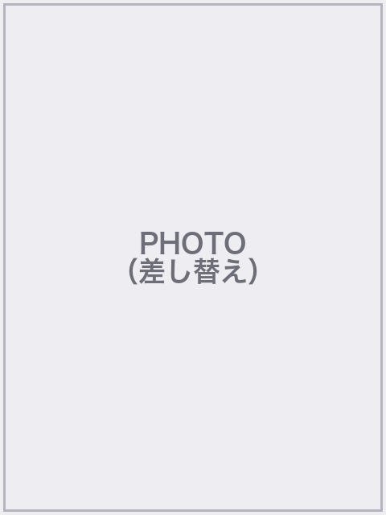

ブランド × サンプルプロダクト
Speaker Introduction
E1 / Eternal

講師 太郎
Taro Yamada
X
@your_sub
URL
@your_main
URL
example.com
ひとこと：
24時間AIを触ってます。AI社員を作るのが趣味。
現在
株式会社
ブランド
代表 ／
サンプルスタジオ
運営。
総売上 （売上実績）
、サンプルコミュニティ 含む
（複数アカウント運用）
、（チーム規模）の組織を運営。
事業開始 1 年
売上 （売上実績）
達成。サンプルコミュニティ 含む X （複数アカウント）で
合計フォロワー （フォロワー数）
。
事業開始 半年
自社事業を
（実績例）
。学生 AI コミュニティ
サンプルコミュニティ
を立ち上げ。
それまで
AI 企業のマーケティングに数々従事。〇〇大学大学院 （最終学歴）。